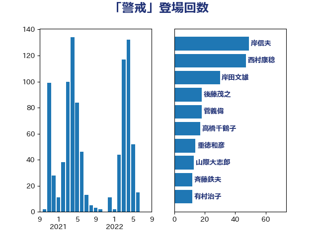

単語「警戒」

| 岸信夫 | 自由民主党 | 49 回 |
| 西村康稔 | 自由民主党 | 47 回 |
| 岸田文雄 | 自由民主党 | 30 回 |
| 後藤茂之 | 自由民主党 | 18 回 |
| 菅義偉 | 自由民主党 | 18 回 |
| 高橋千鶴子 | 日本共産党 | 17 回 |
| 重徳和彦 | 立憲民主党 | 14 回 |
| 山際大志郎 | 自由民主党 | 13 回 |
| 斉藤鉄夫 | 公明党 | 12 回 |
| 有村治子 | 自由民主党 | 12 回 |
| 林芳正 | 自由民主党 | 12 回 |
| 山井和則 | 立憲民主党 | 9 回 |
| 赤羽一嘉 | 公明党 | 8 回 |
| 萩生田光一 | 自由民主党 | 7 回 |
| 赤澤亮正 | 自由民主党 | 7 回 |
| 鬼木誠 | 立憲民主党 | 7 回 |
| 上川陽子 | 自由民主党 | 6 回 |
| 杉久武 | 公明党 | 5 回 |
| 杉本和巳 | 日本維新の会 | 5 回 |
| 柳ヶ瀬裕文 | 日本維新の会 | 5 回 |
| 渡辺周 | 立憲民主党 | 5 回 |
| 玉木雄一郎 | 国民民主党 | 5 回 |
| 石垣のりこ | 立憲民主党 | 5 回 |
| 羽田次郎 | 立憲民主党 | 5 回 |
| 野上浩太郎 | 自由民主党 | 5 回 |
| 黄川田仁志 | 自由民主党 | 5 回 |
| 中島克仁 | 立憲民主党 | 4 回 |
| 井上哲士 | 日本共産党 | 4 回 |
| 伊波洋一 | 無所属 | 4 回 |
| 宮本徹 | 日本共産党 | 4 回 |
| 平口洋 | 自由民主党 | 4 回 |
| 梅村聡 | 日本維新の会 | 4 回 |
| 浜口誠 | 国民民主党 | 4 回 |
| 浜地雅一 | 公明党 | 4 回 |
| 福山哲郎 | 立憲民主党 | 4 回 |
| 佐藤英道 | 公明党 | 3 回 |
| 勝部賢志 | 立憲民主党 | 3 回 |
| 塩川鉄也 | 日本共産党 | 3 回 |
| 大口善徳 | 公明党 | 3 回 |
| 市村浩一郎 | 日本維新の会 | 3 回 |
| 後藤祐一 | 立憲民主党 | 3 回 |
| 末松義規 | 立憲民主党 | 3 回 |
| 松野博一 | 自由民主党 | 3 回 |
| 梅村みずほ | 日本維新の会 | 3 回 |
| 梶山弘志 | 自由民主党 | 3 回 |
| 森本真治 | 立憲民主党 | 3 回 |
| 浅野哲 | 国民民主党 | 3 回 |
| 浦野靖人 | 日本維新の会 | 3 回 |
| 田村憲久 | 自由民主党 | 3 回 |
| 穀田恵二 | 日本共産党 | 3 回 |
| 篠原豪 | 立憲民主党 | 3 回 |
| 茂木敏充 | 自由民主党 | 3 回 |
| 赤嶺政賢 | 日本共産党 | 3 回 |
| 足立敏之 | 自由民主党 | 3 回 |
| 野田佳彦 | 立憲民主党 | 3 回 |
| 長峯誠 | 自由民主党 | 3 回 |
| 阿部知子 | 立憲民主党 | 3 回 |
| 中谷真一 | 自由民主党 | 2 回 |
| 住吉寛紀 | 日本維新の会 | 2 回 |
| 佐藤茂樹 | 公明党 | 2 回 |
| 加田裕之 | 自由民主党 | 2 回 |
| 古川元久 | 国民民主党 | 2 回 |
| 古川禎久 | 自由民主党 | 2 回 |
| 吉田統彦 | 立憲民主党 | 2 回 |
| 堀内詔子 | 自由民主党 | 2 回 |
| 塩村あやか | 立憲民主党 | 2 回 |
| 小泉進次郎 | 自由民主党 | 2 回 |
| 小西洋之 | 立憲民主党 | 2 回 |
| 山口壯 | 自由民主党 | 2 回 |
| 山本博司 | 公明党 | 2 回 |
| 山添拓 | 日本共産党 | 2 回 |
| 斎藤アレックス | 国民民主党 | 2 回 |
| 新垣邦男 | 立憲民主党 | 2 回 |
| 本村伸子 | 日本共産党 | 2 回 |
| 杉尾秀哉 | 立憲民主党 | 2 回 |
| 東徹 | 日本維新の会 | 2 回 |
| 柚木道義 | 立憲民主党 | 2 回 |
| 柿沢未途 | 無所属 | 2 回 |
| 榛葉賀津也 | 国民民主党 | 2 回 |
| 武部新 | 自由民主党 | 2 回 |
| 沢田良 | 日本維新の会 | 2 回 |
| 浅田均 | 日本維新の会 | 2 回 |
| 浜田聡 | NHK党 | 2 回 |
| 清水貴之 | 日本維新の会 | 2 回 |
| 田島麻衣子 | 立憲民主党 | 2 回 |
| 田村智子 | 日本共産党 | 2 回 |
| 石橋通宏 | 立憲民主党 | 2 回 |
| 磯崎仁彦 | 自由民主党 | 2 回 |
| 蓮舫 | 立憲民主党 | 2 回 |
| 豊田俊郎 | 自由民主党 | 2 回 |
| 酒井庸行 | 自由民主党 | 2 回 |
| 馬場伸幸 | 日本維新の会 | 2 回 |
| 高木かおり | 日本維新の会 | 2 回 |
| 麻生太郎 | 自由民主党 | 2 回 |
| 三宅伸吾 | 自由民主党 | 1 回 |
| 下条みつ | 立憲民主党 | 1 回 |
| 中山展宏 | 自由民主党 | 1 回 |
| 中川郁子 | 自由民主党 | 1 回 |
| 丹羽秀樹 | 自由民主党 | 1 回 |
| 伊佐進一 | 公明党 | 1 回 |
| 伊藤孝恵 | 国民民主党 | 1 回 |
| 佐藤正久 | 自由民主党 | 1 回 |
| 加藤勝信 | 自由民主党 | 1 回 |
| 吉川沙織 | 立憲民主党 | 1 回 |
| 吉田宣弘 | 公明党 | 1 回 |
| 和田義明 | 自由民主党 | 1 回 |
| 國重徹 | 公明党 | 1 回 |
| 城井崇 | 立憲民主党 | 1 回 |
| 大串博志 | 立憲民主党 | 1 回 |
| 大塚耕平 | 国民民主党 | 1 回 |
| 大家敏志 | 自由民主党 | 1 回 |
| 室井邦彦 | 日本維新の会 | 1 回 |
| 寺田学 | 立憲民主党 | 1 回 |
| 小林鷹之 | 自由民主党 | 1 回 |
| 小池晃 | 日本共産党 | 1 回 |
| 小沢雅仁 | 立憲民主党 | 1 回 |
| 小田原潔 | 自由民主党 | 1 回 |
| 小野泰輔 | 日本維新の会 | 1 回 |
| 山下芳生 | 日本共産党 | 1 回 |
| 山口那津男 | 公明党 | 1 回 |
| 山岡達丸 | 立憲民主党 | 1 回 |
| 山谷えり子 | 自由民主党 | 1 回 |
| 岩本剛人 | 自由民主党 | 1 回 |
| 島尻安伊子 | 自由民主党 | 1 回 |
| 島村大 | 自由民主党 | 1 回 |
| 平将明 | 自由民主党 | 1 回 |
| 平山佐知子 | 無所属 | 1 回 |
| 平木大作 | 公明党 | 1 回 |
| 平沢勝栄 | 自由民主党 | 1 回 |
| 朝日健太郎 | 自由民主党 | 1 回 |
| 柴田巧 | 日本維新の会 | 1 回 |
| 森田俊和 | 立憲民主党 | 1 回 |
| 武見敬三 | 自由民主党 | 1 回 |
| 江田憲司 | 立憲民主党 | 1 回 |
| 河西宏一 | 公明党 | 1 回 |
| 渡辺創 | 立憲民主党 | 1 回 |
| 熊野正士 | 公明党 | 1 回 |
| 片山大介 | 日本維新の会 | 1 回 |
| 牧山ひろえ | 立憲民主党 | 1 回 |
| 田名部匡代 | 立憲民主党 | 1 回 |
| 田所嘉徳 | 自由民主党 | 1 回 |
| 田村まみ | 国民民主党 | 1 回 |
| 矢倉克夫 | 公明党 | 1 回 |
| 石井啓一 | 公明党 | 1 回 |
| 石井浩郎 | 自由民主党 | 1 回 |
| 石川博崇 | 公明党 | 1 回 |
| 礒崎哲史 | 国民民主党 | 1 回 |
| 神津たけし | 立憲民主党 | 1 回 |
| 福島伸享 | 無所属 | 1 回 |
| 緑川貴士 | 立憲民主党 | 1 回 |
| 自見はなこ | 自由民主党 | 1 回 |
| 芳賀道也 | 国民民主党 | 1 回 |
| 谷合正明 | 公明党 | 1 回 |
| 道下大樹 | 立憲民主党 | 1 回 |
| 野中厚 | 自由民主党 | 1 回 |
| 野田国義 | 立憲民主党 | 1 回 |
| 野間健 | 立憲民主党 | 1 回 |
| 金子恭之 | 自由民主党 | 1 回 |
| 鈴木憲和 | 自由民主党 | 1 回 |
| 鈴木敦 | 国民民主党 | 1 回 |
| 音喜多駿 | 日本維新の会 | 1 回 |
| 高橋光男 | 公明党 | 1 回 |
| 高階恵美子 | 自由民主党 | 1 回 |
| 鳩山二郎 | 自由民主党 | 1 回 |